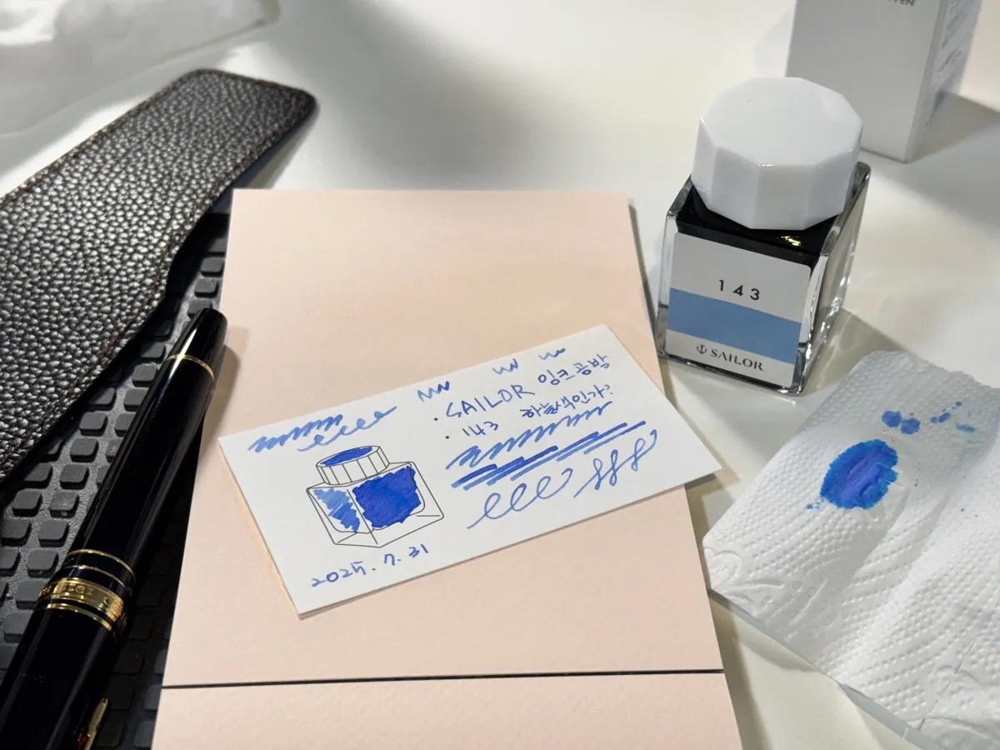

01 / Pens
HAM’S UNIVERSE · NINE STARS
A fountain pen. An open road. A familiar song.
Follow a star that feels like you.
Stories and scenes in nine stars
Not sure where to begin? Start a conversation about what you would like to do.
Start a conversation (Korean) ↗A colleague who helps find the story in words and photographs, and shape it for the people who will read it.
Talk to Hamjipsa about your story (Korean) ↗A colleague who turns ideas into videos, websites and AI tools. Explore the existing work and ways to collaborate.
Explore work and services (Korean) ↗